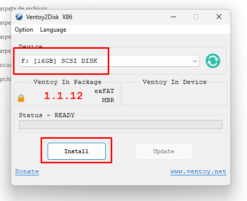
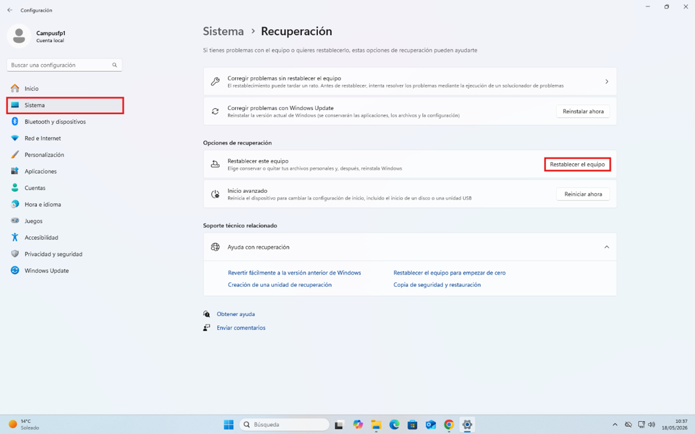
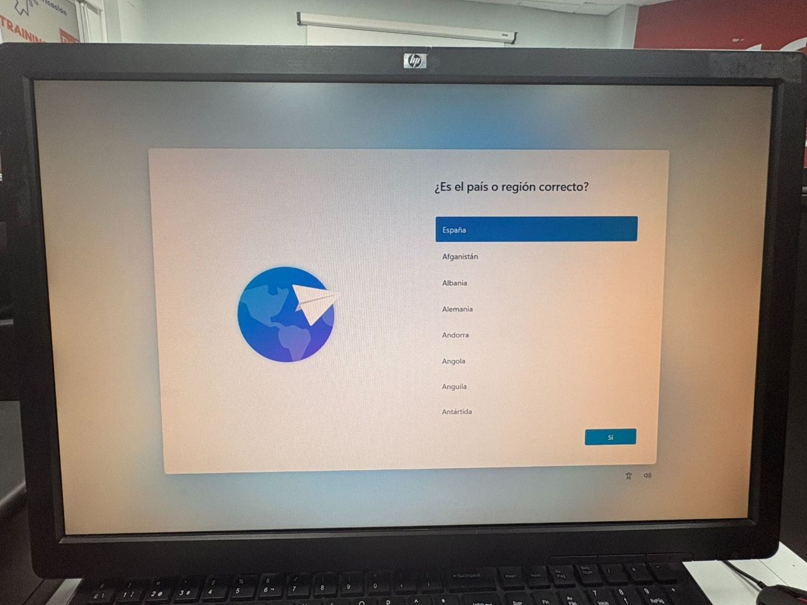
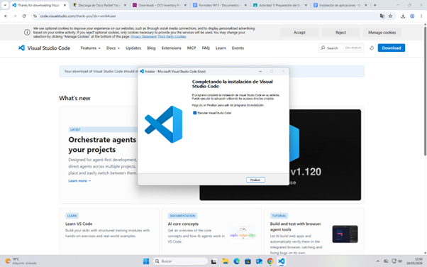
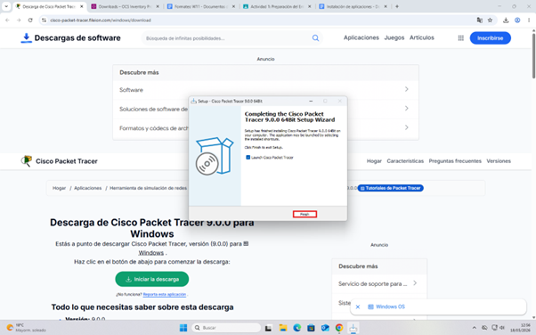
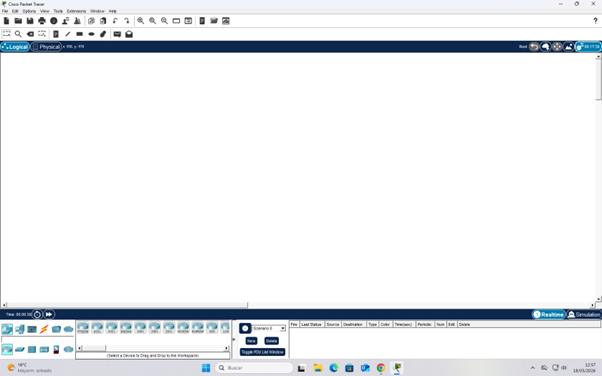
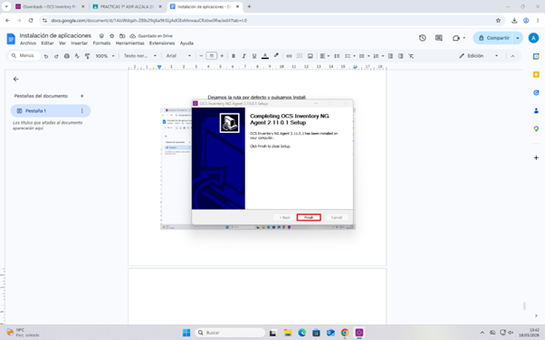

Actividad 1: Preparación del Entorno
“Para el booteo de las ISO vamos a usar Ventoy, en el buscador vamos a buscar Ventoy y nos meteremos al primer link.”
1. Descarga e instalación de Ventoy
Ventoy permite crear un USB booteable sin tener que formatearlo cada vez. Solo arrastras las ISOs dentro del pendrive.
Pasos:
- Descargar Ventoy desde su web oficial.
- Descomprimir el ZIP.
- Ejecutar Ventoy2Disk.exe.
- Seleccionar la unidad USB.
- Pulsar Install.
Captura:

2. Formateo de Windows 11
Se accede a Configuración → Sistema → Recuperación → Restablecer este equipo.
Captura:


3. Instalación de herramientas
Visual Studio Code

Cisco Packet Tracer


OCS Inventory Agent
